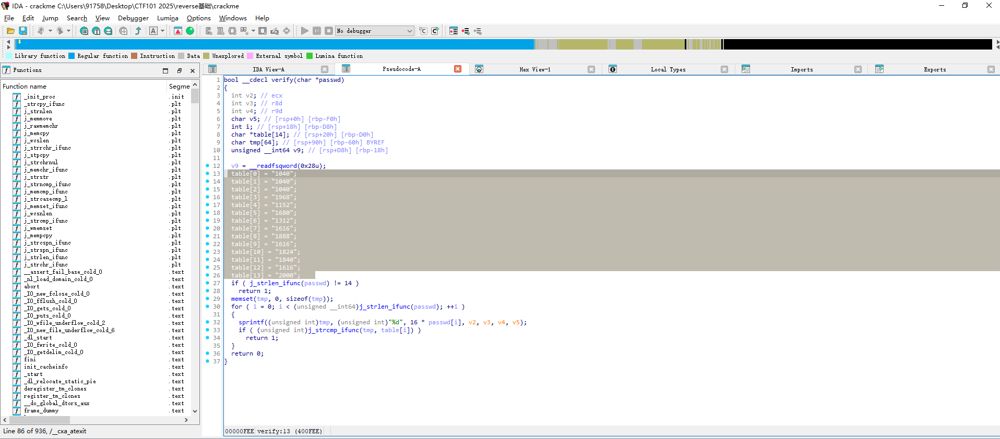

<div class="middle center"> <div style="width: 100%"> # Reverse基础 --- # @huayi 2025.7.4 </div> </div> <!--s--> <div class="middle center"> <div style="width: 100%"> # Part.0 准备工作 </div> </div> <!--v--> ## 准备工作 一些需要安装的工具 <!--  --> - linux环境(wsl/vmware) - Python环境 - z3-solver - IDA - GDB <!--v--> ## 关于逆向 - 一杯茶、一包薯片、一个逆向做一天 - 赛题加密部分涉及密码学、数学知识；学无止境 - 大量可用工具；学无止境 plus - 逆向核心逻辑十分复杂枯燥；学无止境 plus++ - 与开发联系紧密 - 语言 C/C++ Python Java C# Javascript go 以及各种汇编语言 - 平台 Linux Windows Macos 跨平台 - 架构 x86 ARM <!--v--> ## 逆向参考资料 - 看雪论坛 https://www.kanxue.com/ - 吾爱破解 https://www.52pojie.cn/ - CTF Wiki https://ctf-wiki.org/ <!--v--> ## 逆向课内容介绍 - 逆向基础 程序编译 程序执行流程 工具使用 约束求解等 - 逆向专题1 游戏/异架构逆向 - 逆向专题2 自动逆向 <!--v--> ## 逆向基础课内容 - 预处理、编译、汇编、链接 - elf可执行文件结构 - 静态分析工具IDA使用 - 动态分析 - linux gdb - windows x32dbg/x64dbg Ollydbg - 约束求解z3-solver - 有时间简单介绍 - 代码混淆 - 壳 <!--s--> <div class="middle center"> <div style="width: 100%"> # Part.1 程序编译和执行流程 </div> </div> <!--v--> ## 程序编译 - CALL - gcc <!--v--> ## 程序执行 - __libc_start_main 的内容其实不重要 - 重要的是关注 _start - __libc_start_main 的参数 <!--v--> ## 俯瞰一下逆向的赛题 <!--s--> <div class="middle center"> <div style="width: 100%"> # Part.2 工具使用和例题讲解 </div> </div> <!--v--> ## IDA - 常用的快捷键 - 查看字符串 `Shift+F12` - 交叉引用 `x` - 地址跳转 `g` <!--v--> ## GDB - GDB ```sh r b <address> c ``` <!--v--> ## 例2 lab0 crackme - 再次审视一下这个程序的结构 <!--v--> ## 例3 base64 - base64加密表 ```py import base64 import string str1 = "RjS2WUGwWS80U2W1yfB=" string1 = "ZYXABCDEFGHIJKLMNOPQRSTUVWzyxabcdefghijklmnopqrstuvw0123456789+/" string2 = "ABCDEFGHIJKLMNOPQRSTUVWXYZabcdefghijklmnopqrstuvwxyz0123456789+/" print(base64.b64decode(str1.translate(str.maketrans(string1,string2)))) ``` <!--v--> ## 休息一下吧 <!--s--> <div class="middle center"> <div style="width: 100%"> # Part.3 约束求解和z3-solver </div> </div> <!--v--> ## z3-solver - z3是一个微软研究院开源的theorem prover(定理证明器)，支持位向量、布尔、数组、浮点数、字符串以及其他数据类型。 ```shell $ pip3 install z3-solver ``` - 线性约束方程，用z3一把梭 ```py from z3 import * x,y,z=Ints('x y z') s=Solver() s.add(2*x+3*y+z==100) s.add(x-y+2*z==-10) s.add(x+2*y-z==212) print(s.check()) print(s.model()) ``` <!--s--> <div class="middle center"> <div style="width: 100%"> # Part.4 代码混淆和壳 </div> </div> <!--v--> ## 代码混淆 <!--v--> ## 壳 <div class="middle center"> <div style="width: 100%"> <!--s--> # Part.5 其他 </div> </div> <!--v--> ## 总结 - linux下可执行文件的编译和执行 - 熟悉IDA界面和常用 <!--v--> ## 展望 - 了解一下idapython脚本 - 了解下加壳和脱壳技术 - 了解常见混淆技术 - 了解更多编程语言、架构和平台的逆向 可以从游戏出发（逆向专题1的前瞻） - 尝试练习一下约束求解工具z3-sover （逆向专题2的前瞻） <!--v--> ## 作业 - 基础： - Challenge 1: 复现hello.c的编译执行流程 撰写操作报告 - Challenge 2: 熟悉IDA和GDB的操作 撰写操作报告 - Challenge 3: 复现课上的题目例2例3 并在报告中描述思路和流程 - 挑战： - Challenge 4: 完成circuit(用z3-solver) - Challenge 5: <!--v--> ## 预告 - 逆向专题1 游戏/异架构逆向 @huayi - 异架构以及不同语言的逆向——本质 各种架构介绍/游戏逆向——目的 示例游戏的编写语言 游戏引擎 - 6502汇编NES/Windows下的游戏逆向/Python逆向/早期诺基亚Java游戏/Javascript逆向（网页小游戏+代码混淆）/Unity游戏逆向（C# dnspy） - 逆向专题2 "自动"逆向技巧 @f0rm2l1n - 引言：人工密集型的逆向过程 - 基础：符号执行器基础 - 以 angr 为例 - 实战：符号执行用于自动化逆向 - 反思：符号执行存在的不足 - 拓展：其他"自动"化技巧探讨 <!--s--> <div class="middle center"> <div style="width: 100%"> # 谢谢大家 --- # questions? </div> </div>